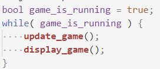

202202190235 Реализация Экрана Игры
Цель
Настало время заняться самым важным во Втором модуле - реализация логики игры.
Весь код любой игры, очень грубо и абстрактно можно было бы описать следующим видом:

Где:
update_game()- код, который обрабатывает сигналы от пользователя, а также обновляет игровые события (в нашем случае: движение монстров, генерация монстров и ловушек, обработка столкновений)display_game()- код, который возьмет Модель игры, и покажет её пользователю. Важно отметить, что логику игры и механику, мы в целом могли бы писать и без внешнего вида. Другое дело, что играть в то, что не видно особо не получится, а вот программировать и делить код и задачи так легче ;).
В случае Браузера и JavaScript дела обстоят чуть интереснее: весь JS и так обрабатывается в Бесконечном событийном цикле, нам остается к началу игры правильно проинициализировать значения и назначить функции которые будут обрабатывать события от Пользователя. А периодически создавать монстров каждые N-секунд мы можем с помощью setTimeout и setInterval.
Шаги
- Модель/Состояние Игры
- Инициализация и Отображение Состояния Игры
- Движение Игрока
- Завершение игры при выходе через правую границу карты
- Генерация Ловушек
- Столкновение с Ловушками
- Генерация Монстров и Столкновение с Монстрами
- Постановка Игры на Паузу